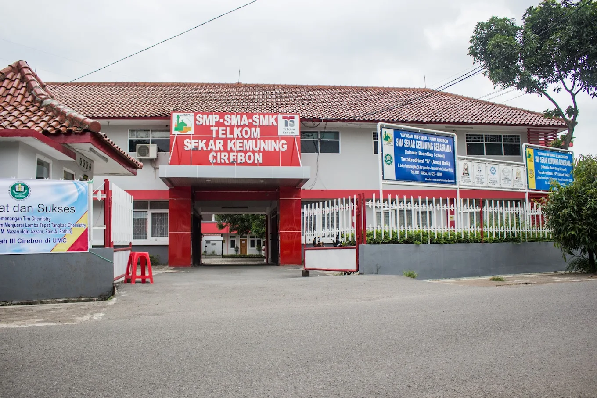
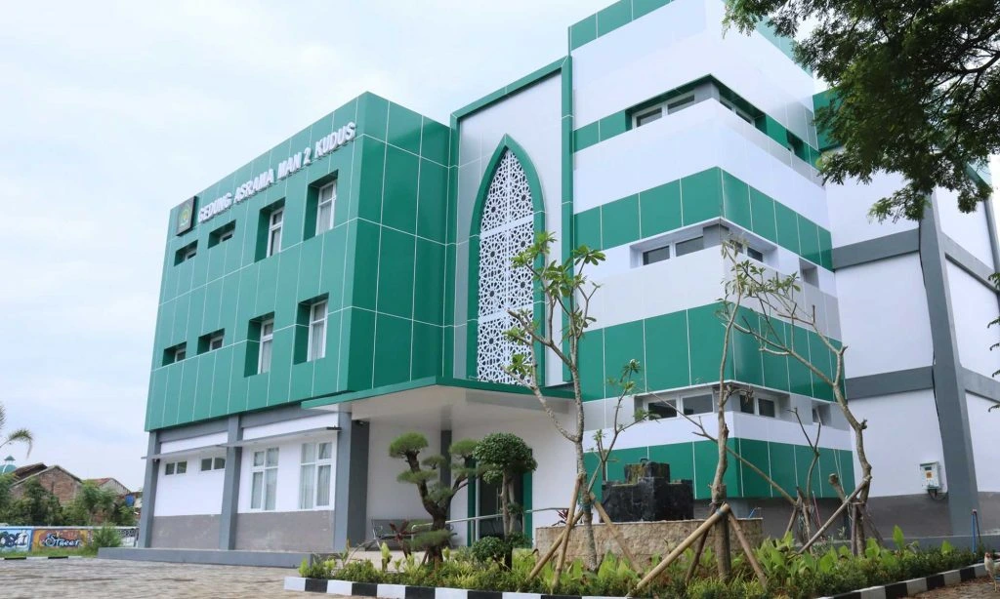
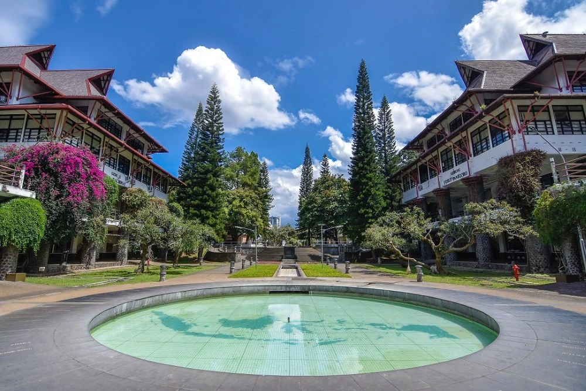

Tentang Diriku
Perkenalan singkat tentang diriku.
Saya Zydna Mudzacky Ramadhani, mahasiswa Oseanografi Institut Teknologi Bandung yang memiliki minat pada bidang teknologi, pengembangan web, desain, dan eksplorasi ilmu kebumian.
Saya senang membangun berbagai proyek digital, mempelajari teknologi baru, serta mengembangkan solusi kreatif yang menggabungkan pemrograman, desain, dan pemanfaatan teknologi untuk memberikan manfaat bagi masyarakat.
Timeline Pendidikan
Perjalanan pendidikanku.
-

SD
SDN 3 Margadadi Indramayu
-

SMP
SMP Telkom Sekar Kemuning Cirebon
-

SMA
MAN 2 Kudus
-

Sarjana (S1)
Oseanografi - Institut Teknologi Bandung
Keahlian
Kombinasi kemampuan teknis dan interpersonal yang terus kukembangkan.
Hard Skills
- Web Development
- Pemrograman
- Data Analysis
- UI/UX Design
- Microsoft Office
- Arduino
Soft Skills
- Teamwork
- Communication
- Problem Solving
- Leadership
- Continuous Learning
- Time Management
Prestasi
Beberapa prestasi yang telah diraih dalam perjalanan pendidikan dan pengalamanku.
-
Sertifikasi Bahasa Jepang N5
Menyelesaikan pelatihan bahasa Jepang tingkat dasar (N5) yang diselenggarakan oleh Dinas Tenaga Kerja dan Transmigrasi Provinsi Jawa Barat bekerja sama dengan LPK Graha Navigasi Horizon Bandung.
Lihat Sertifikat -
British Council English Score
Mendapat predikat CEFR B1 (Intermediate) dalam tes kemampuan bahasa Inggris yang diselenggarakan oleh British Council.
Lihat Sertifikat -
Sertifikasi Pendamping Produk Halal
Menyelesaikan pelatihan sertifikasi sebagai pendamping produk halal yang diselenggarakan oleh Lembaga Sertifikasi Produk Halal.
Lihat Sertifikat -
Hafidz Quran 5 Juz
Telah menyelesaikan hafalan 5 juz Al-Quran di SMP Telkom Sekar Kemuning Cirebon.
Lihat Sertifikat -
Medali Emas Indonesian Youth Science Competition
Meraih medali emas bidang IPA dalam kompetisi sains tingkat nasional Indonesian Youth Science Competition (IYSC) 2021 yang diselenggarakan oleh Pusat Olimpiade Sains Indonesia.
Lihat Sertifikat
Pengalaman
Beberapa pengalaman dan organisasi yang telah kujalani.
-
IMarEST (Institute of Marine Engineering, Science & Technology)
Sebagai Brand Experience Manager IMarEST, bertanggung jawab dalam mengembangkan ide visual branding dan konsep edukasi maritim.
-
Kewilayahan GAMAIS ITB (Keluarga Muslim Institut Teknologi Bandung)
Sebagai staf Divisi Relasi, bertanggung jawab membangun komunikasi dan kerja sama dengan pihak internal maupun eksternal serta mendukung berbagai kegiatan Kewilayahan Al-Uswah FITB.
-
Tim Robotik MAN 2 Kudus
Sebagai Sekretaris, bertanggung jawab dalam mengelola administrasi, dokumentasi, dan koordinasi kegiatan divisi robotik, serta mendukung pengembangan proyek-proyek robotik di MAN 2 Kudus.
-
OSIS (Organisasi Siswa Intra Sekolah) SMP Telkom Sekar Kemuning
Menjabat sebagai Kepala Bidang K3 yang bertanggung jawab mengoordinasikan program keamanan, kebersihan, dan kesehatan lingkungan sekolah.
Motto Hidup
“Tetaplah berada di jalan kebenaran, biarkan Tuhan yang menyempurnakannya.”